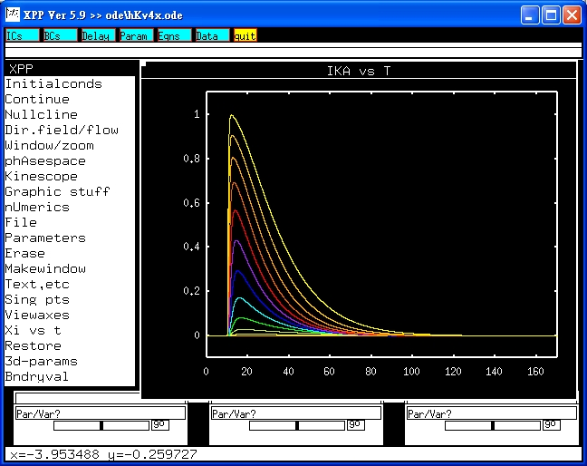

This is the readme.txt for the models associated with the paper.
Greenstein JL et al., Role of the calcium-independent transient outward
current Ito1 in shaping action potential morphology and duration.
Circ Res 2000;87:1026-1033.
Abstract:
The Kv4.3-encoded current I_Kv4.3 has been identified as the major
component of the voltage-dependent Ca(2+)-independent transient
outward current I_to1 in human and canine ventricular
cells. Experimental evidence supports a correlation between I_to1
density and prominence of the phase 1 notch; however, the role of
I_to1 in modulating action potential duration (APD) remains
unclear. To help resolve this role, Markov state models of the human
and canine Kv4.3- and Kv1.4-encoded currents at 35 degrees C are
developed on the basis of experimental measurements. A model of canine
I_to1 is formulated as the combination of these Kv4.3 and Kv1.4
currents and is incorporated into an existing canine ventricular
myocyte model. Simulations demonstrate strong coupling between L-type
Ca(2+) current and I_Kv4.3 and predict a bimodal relationship
between I_Kv4.3 density and APD whereby perturbations in I_Kv4.3
density may produce either prolongation or shortening of APD,
depending on baseline I_to1 current level.
-------------------------------------
The state diagram for this model was shown in figure 1A of the paper.
Model parameters are available at.
http://circres.ahajournals.org/cgi/data/87/11/1026/DC1/1
For the sake of clarity, current traces were displaced in figure 2A.
Current-voltage relation of this current can also be constructed.
To run the models:
XPP: start with the command
xpp ode\hKv4x.ode
Mouse click on Initialconds, and then (G)o.
Regarding xpp program, please contact with
Bard Ermentrout's website http://www.pitt.edu/~phase/
describes how to get and use xpp.
To run a series of voltage-clamp studies, click Range over,
change to 'vtest_1',
and then select voltage protocol from Steps (14), Start (-70) and End (+60).
This makes traces:

similar to fig 3A of the paper.
The model files were submitted by:
Dr. Sheng-Nan Wu, Dr. Ruey J. Sung, Ya-Jean Wang and Jiun-Shian Wu
National Cheng Kung University Medical College
Tainan 70101, Taiwan
e-mail: snwu@mail.ncku.edu.tw